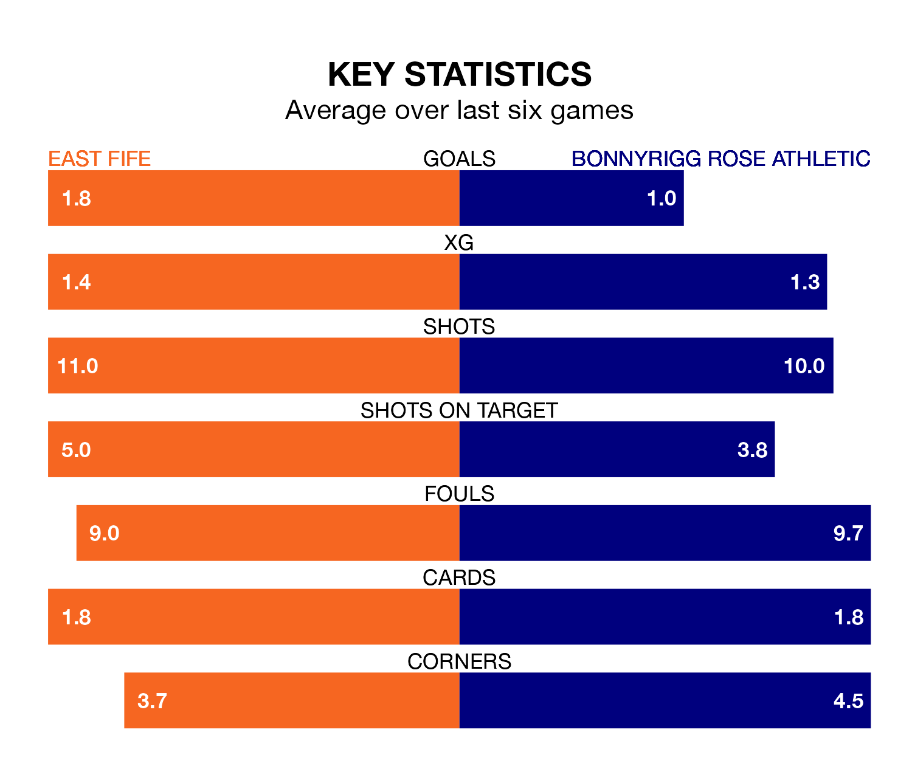

East Fife face Bonnyrigg Rose Athletic on Saturday seeking to protect their formidable unbeaten run in League Two.
The Fifers are unbeaten in nine, with five wins and four draws, ahead of the 3pm kick-off.
They face a Bonnyrigg Rose team who have drawn four and lost five over the same number of games.
In the last 10 years, East Fife and Bonnyrigg Rose have played each other on seven occasions. East Fife won two of them, Bonnyrigg Rose three, and they drew twice.
On average, the Fifers scored 1.3 goals and Bonnyrigg Rose 1.7 in those matches.
Their last meeting was on February 17, when East Fife won 2-0 away.
In Nathan Austin, East Fife have one of the league's most on-form strikers so far this season. He has notched 13 goals in 28 appearances, to sit third in the scoring charts.
His goal rate of one every 172 minutes is quicker than that of Neil Martyniuk, Bonnyrigg Rose's top scorer with a goal every 240 minutes, and a total of 11 goals in 30 games.
With 38 goals in 32 games so far this season, Athletic are scoring at below the league average rate with 1.2 goals per game. And they are conceding more than average, letting in 45 goals at a rate of 1.4 per game.
The Fifers, meanwhile, are average scorers, with 1.3 goals per game. They have conceded 1.2 goals per game.
The away side are eighth in the table after 32 games, of which they have won seven and drawn 11, earning 32 points.
The hosts are three places ahead of Bonnyrigg Rose in fifth, with 11 wins and 11 draws putting them on 44 points.
East Fife's last match was on April 6, a 0-0 draw against Stenhousemuir.
Bonnyrigg Rose drew 2-2 with Peterhead last time out, also on April 6, with Bradley Barrett and Lee Currie on the scoresheet.
Updated: 11:20 (UTC), 09/04/24